<!DOCTYPE html><html><head><title>Portfolio of Nathan Keen</title><meta charset="utf-8"><meta name="viewport" content="width=device-width, initial-scale=1, shrink-to-fit=no"><link rel="stylesheet" href="https://maxcdn.bootstrapcdn.com/bootstrap/4.0.0-beta.2/css/bootstrap.min.css" integrity="sha384-PsH8R72JQ3SOdhVi3uxftmaW6Vc51MKb0q5P2rRUpPvrszuE4W1povHYgTpBfshb" crossorigin="anonymous"><link rel="stylesheet" href="css/fontawesome.css"><link rel="stylesheet" href="css/layout.css"></head></html><body id="top" data-spy="scroll" data-target="#navbot" data-offset="0"> <div class="container"><header><h1>How I built the Red Cup Cafe website</h1></header><section><div class="row vertcentre"><div class="col-md-6"><h2 class="anchor" id="Neg">Negotiation</h2><p class="text-muted">How the project started</p><p>I approached the client having worked with him before and he was happy to start a redesign.</p><p>"I need a website" is the common request, but that results in poor websites.</p><p>If I missed the strategic stage, the client would have missed out on several 5-6 figure opportunities.</p><p>Hat tip to <a href="https://doubleyourfreelancing.com/rate/">Brennan Dunn, author of "Double Your Freelancing Rate"</a> for this planning process.</p></div><div class="col-md-6"><figure>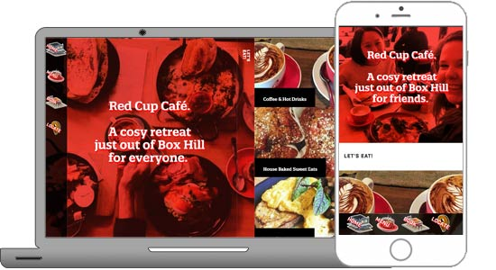<figcaption class="figure-caption text-center">Built using Joomla, the owner wanted a unique and authentic look</figcaption></figure></div></div></section><div class="row justify-content-center"><div class="col-md-10 col-xl-8"><h4>My strategy process</h4><h5>1. "Why you're here"</h5><p>Here, I utilise my introversion to listen well to their problems, difficulties and frustrations. I try to map them to actual lost revenue or opportunities.</p><p>I quantify these problems, in money lost per year. </p><p>For example, a very rough estimate of the number of people lost because they didn't want to wait in line was:</p><ul><li>Lost revenue: 100 orders/week x $8/average order cost x 52 weeks = $41,600/year</li></ul><p>Now, the numbers are estimates. If the owner knew the number more intimately, and new the actual average order cost was more like $15, then that's about double, or $80,000. I didn't need to know the exact amounts.</p><p>I also try to use stats where possible. This one shows simply adding online ordering is worth a lot:</p><figure>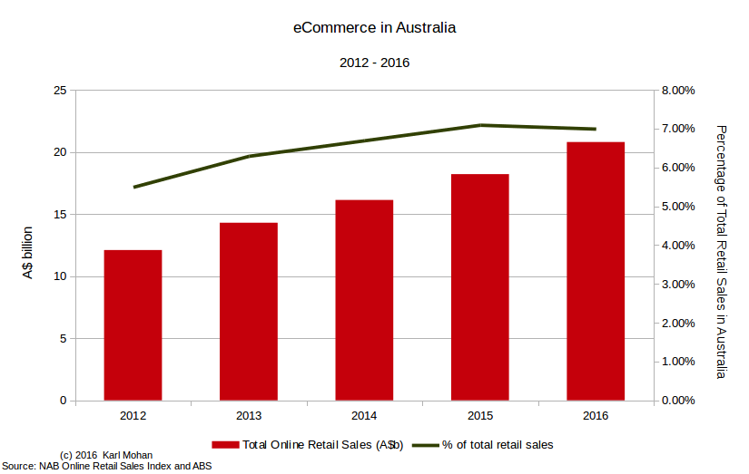<figcaption class="figure-caption text-center">7% of all retail sales were online in 2016</figcaption></figure><p>Then, let's calculate for them:</p><div class="form-inline" id="code-ecommerce2"><label class="mr-2" for="quantity-ecommerce2">Total yearly revenue: </label><div class="input-group"><div class="input-group-addon my-2">$</div><input class="form-control my-2" type="text" style="width: 125px;" name="quantity" id="quantity-ecommerce2" value="1000000"></div><div class="input-group"><label class="mx-2" for="item_price-ecommerce2">Increase:</label><input class="form-control my-2" type="text" style="width: 75px;" name="item_price" id="item_price-ecommerce2" value="7"><div class="input-group-addon my-2">%</div></div><div class="input-group"><label class="mr-2" for="total_price-ecommerce2">Revenue increase:</label><div class="input-group-addon my-2">$</div><input class="form-control my-2" type="text" style="width: 100px;" name="total_price" id="total_price-ecommerce2" value="70000" readonly=""></div></div><p>You can change the numbers to match your revenue.</p><h5>2. "Where you want to be"</h5><p>Next, we cast the utopia. The goals. The broad picture of where they want to be without much detail. </p><p>Without this stage, we're potentially fixing the symptoms, rather than the actual problems. We're also potentially limiting ourselves to a narrow subset of solutions.</p><p>Crucially, I uncovered the need to look to what customers are now calling for - using their phones to pre-order. This is more than what the owner envisioned, but would be crucial to overcoming a key problem: people being turned away because of long lines. </p><h5>3. "What we want to do"</h5><p>This is where I outline the broad solution.</p><p>For this project, I researched and created several user scenarios. This painted the 'before' picture and the 'after'.</p><p>I outlined what a website could do for them, as well as the need for an app to pre-order. (This also required a few other needs which I will not detail.)</p><h5>4. "What risks we'll minimise"</h5><p>This section outlines some potential problems. </p><p>It's helpful to document for the business owner, to know that you know about these pitfalls. It's also helpful for you, to build them into your costs and be accountable for them.</p><h5>5. "Why we're the best for the project"</h5><p>This is a pretty standard 'why us' section.</p><p>So why me?</p><p>I had:</p><blockquote class="blockquote"><i class="fas fa-quote-left"></i>we connect the big picture so you get a return on investment</blockquote><p>So I work out their goals so we can focus on them, rather than including every feature or never getting the solution off the ground.</p><blockquote class="blockquote"><i class="fas fa-quote-left"></i>fundamentally better solutions, not just micro improvements</blockquote><p>I operate through holistic thinking, as best summarised by Henry Ford:<figure>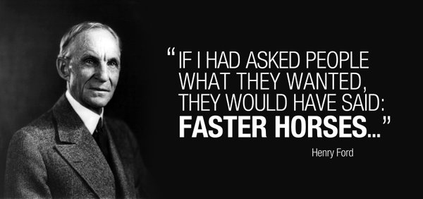<figcaption class="figure-caption text-center">In other words, you need think outside the box. People wanted to get places faster, but they couldn't see past their current systems.</figcaption></figure></p><h5>6. "How we can do this for you"</h5><p>This is where I put the offer, with features and benefits and the cost with the expected return on investment. </p><h5>7. "How we can keep each other up to date"</h5><p>This sets out communication and reporting needs.</p><h5>What else helped?</h5><p>In this case, despite agreeing my proposal made sense from a business point of view, it helped that I turned the question around and ask "what would you be willing to spend?".</p><p>Having been at an impasse because the proposal was too high, we agreed to a compromise and went from an off-the-shelf template instead of a custom one. </p></div></div><section><div class="row vertcentre"><div class="col-md-6"><h2 class="anchor" id="UX">User Experience Planning</h2><p class="text-muted"></p><p>Much of the planning was done during the negotiation phase. You can't decide on a plan before understanding what the customers actually want, after all.</p><p>From a UX perspective, I built user personas, gathered customer feedback, considered a few user scenarios, and mapped out possible features for each user scenario.</p><p>From a wider view, I also enquired about his other systems such as POS, marketing and general processes. That was helpful for thinking through integration needs or possible scope/requirements deficiencies.</p></div><div class="col-md-6"><figure><figcaption class="figure-caption text-center">Stuff.</figcaption></figure></div></div></section><div class="row justify-content-center"><div class="col-md-10 col-xl-8"><h4>The target audience</h4><p>Of course, every business wants to cater to 'everyone'. But I drew a mind map to first build a large list of possible 'drawing cards' for this cafe. </p><p>Broadly speaking, gurus break a target audience down into two main categories: demographics (age, location, income-level, and so on), and psychographics (interests, behaviours, and so on).</p><figure>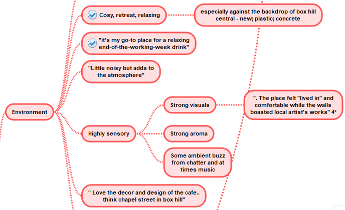<figcaption class="figure-caption text-center">This is some of the psychographic data I pulled from customer reviews, the owner, and other research.</figcaption></figure><p>Apart from demographics, I also did section on 'target audience by time'. This was because the cafe had a considerable time range from early morning right through to late night. </p><figure>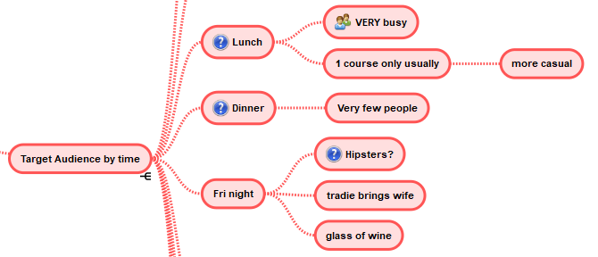<figcaption class="figure-caption text-center">The different audiences by time included morning, breakfast, lunch, dinner, friday night (live music), weekends and morning/afternoon.</figcaption></figure><h4>User personas</h4><p>From this information I was able to build a rough set of user personas. </p><p>The following is demographic and psychographic details of 'Eric the electrician', one of our five personas. </p><figure>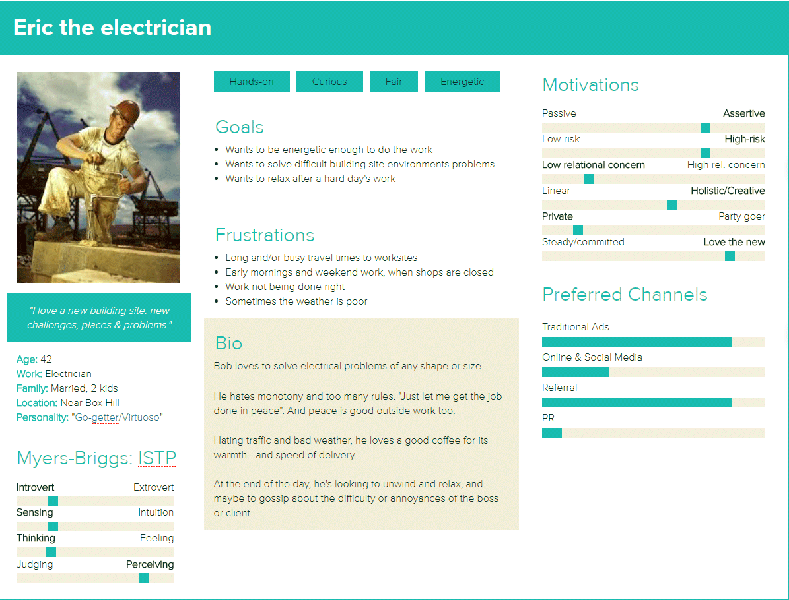<figcaption class="figure-caption text-center">This was created using Xtensio</figcaption></figure><p>This shows 'Eric the electrician', while others were: 'Amy the asian' (a high percentage of Box Hill is Asian), 'Susie the student' (multiple schools nearby), 'Bill the businessman', 'Barbie the young adult'.</p><h4>User Scenarios / Customer Journeys</h4><p>From the personas I put together some user scenarios.</p><figure>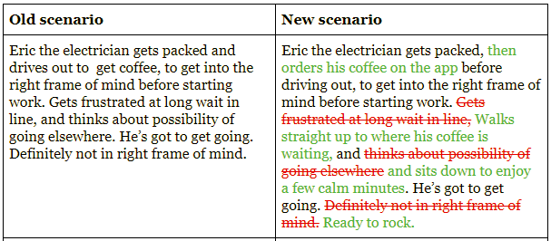<figcaption class="figure-caption text-center">This scenario depended on the full solution, not just the website (the only part done to date)</figcaption></figure><p>The purpose of this exercise is to uncover the full range of touchpoints, emotions, and customer experiences surrounding the product. </p><p>I gained a better appreciation around the following questions: why do they get coffee? What do they want out of it? Is speed important? Is the taste important? What is important?</p><p>The importance and convenience of an app seriously came to the forefront through this. </p><p>With an app, I discovered you could:</p><ul><li>Deliver on speed for those in a rush</li><li>Relax with friends for longer</li><li>Reduce staff time (customers can order & pay themselves)</li><li>Increase satisfaction for customers who feel more in control of their order</li><li>Increase repeat customers (push notifications; a quick 'repeat' order button)</li></ul><p>These were clearly going to improve the experience much more than a website could. </p><h4>Solution finding</h4><p>Now, with a far better understanding of the whole picture, I could come up with a creative solution. </p><p>A website wasn't what customers were really going to benefit from: some kind of preordering app would be necessary. </p><p>However, this app would have to integrate with their POS (the money machine at the counter & EFTPOS), which was too old. A new POS was necessary. </p><p>As this hasn't been implemented yet, I can't give too many details!</p><p>Here's my process, though:</p><ol><li>Gather needs from: all relevant people at the business; technical environment; types of customers; probable future requirements; and so on</li><li>Research the available systems</li><li>Analyse key options, not going further if they don't meet critical needs</li><li>Rate key options' features, if necessary, to pick one from multiple options</li></ol></div></div><section><div class="row vertcentre"><div class="col-md-6"><h2 class="anchor" id="Proto">Prototyping</h2><p class="text-muted">The quick draft version</p><p>As we had a very tight budget, I did the prototyping in the CMS I would use in the live site, Joomla.</p><p>At the same time, I commissioned a graphical piece that doubled the value of the site (more on that later).</p><p>Joomla was chosen over WordPress for it's better structure, better security, and depth of knowledge with available human resources.</p><p>WordPress can deliver a better experience from its ease of use, but the client was not needing to update the site much. As to the front-end, people often relate to me: 'wow this looks like a WordPress site!'. </p><p>But while Joomla's limitations with ease of use can be overcome, WordPress can't easily overcome its security and structural issues.</p><p>I gave a link to the hi-fi prototype to some testers for qualititative review.  </p></div><div class="col-md-6"><figure>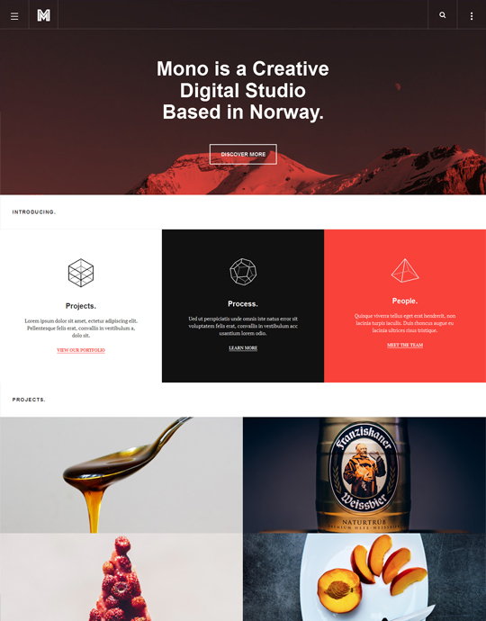<figcaption class="figure-caption text-center">The chosen template, my starting point.</figcaption></figure></div></div></section><div class="row justify-content-center"><div class="col-md-10 col-xl-8"><h4>The template setup</h4><p>Due to the compromise due to a low budget, I had to use a template. I chose the template using the earlier research, summarised to 'unique', 'authentic', 'on trend' and 'an escape'. </p><p>But this meant I could install a fully functional Joomla website, with that template, in a few minutes. </p><p>Then it was a matter of getting rid of elements not needed, and changing the content. </p><h4>Lo-fi rapid prototyping</h4><p>I had an early idea of using a mascot to lighten up the tone of the website, but the client didn't like this. Partly, I think this was because I wasn't able to confidently describe the value that a mascot could bring.</p><figure>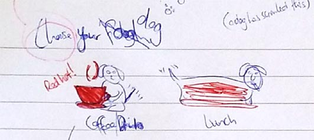<figcaption class="figure-caption text-center">An early drawing of a dog as a mascot</figcaption></figure><p>The idea also incorported an element of fun choice: "choose you dog", with the mascot tweaked in various ways for the different types of foods.</p><p>I enjoy quickly sketching different layout ideas on paper - it's freedom allows me to match the speed of my brain's creativity. Generally, I've found digital tools can't match paper for the lo-fi stage.</p><figure>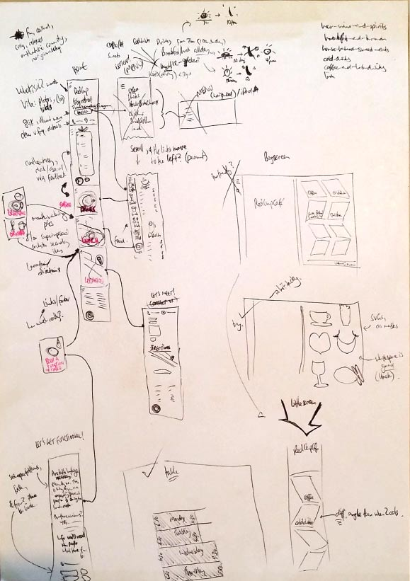<figcaption class="figure-caption text-center">Quick sketches of home page and other page layouts</figcaption></figure><p>Invariably, only parts of it made it to the hi-fi prototype stage, but that's part of the creative process.</p><p>For example, I envisioned customer reviews to be a prime part of the home page. But testing (see below) revealed the pictures were the motivating (mouth-watering).</p><h4>Hi-fi prototyping</h4><p>Lo-fi prototyping helped to rapidly discard bad choices. It also helps to reduce the my mental energy (cognitive load), aka a 'brain dump'. </p><p>Your brain has limited RAM, it seems.</p><p>In Joomla, I needed to make a lot of little CSS changes.</p><p>It's easy to edit the CSS via Chrome's inspect tool, change the CSS on-the-fly, then when you get it right, copy that into the css file. </p><p>For example, I didn't want users to have to work out what the images were about (by scrolling over it). Why make them think? So I made the text's <code>opacity: initial</code> rather than 0, and added <code>background-color: black</code> for extra clarity.</p><figure>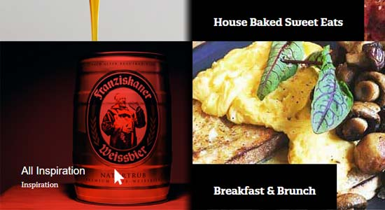<figcaption class="figure-caption text-center">The new title shows all the time, and has a black background for clarity</figcaption></figure><h4>Graphic design & how I doubled the value</h4><p>Part of the distinctiveness of the cafe is mixing the old and the new. I wanted some pixel-art as a throwback to the 80's style of games like Minecraft has done so well. </p><blockquote class="blockquote"><i class="fas fa-quote-left"></i>That would easily take 50 hours. 45 of which I did not have.</blockquote><p>So I had the thought of producing some isometric art or pixelated icons. A view of the cafe for those booking would be handy, and not just eye candy. </p><p>But that would easily take 50 hours. 45 of which I did not have. </p><p>I decided to see whether an overseas freelancer (I used Upwork) had the skills and a low cost of living. </p><p>This is my sketch I gave them to look at, plus actual photos, and a stock picture with the isometric look I wanted:</p><figure>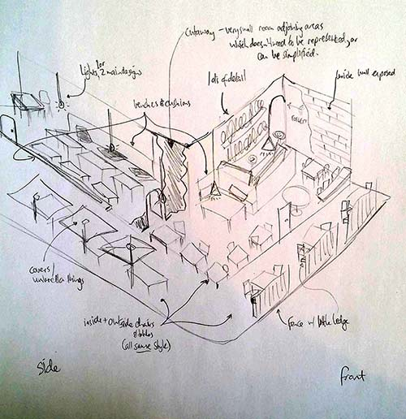<figcaption class="figure-caption text-center">A quick sketch for the freelancer, given together with photos</figcaption></figure><p>Well, I was blown away! I had a large selection of highly skilled graphic artists, within a good pricing point (a few hundred dollars). Easily ten times less than what I could have done it for.</p><p>I worked with them closely in parallel to my other work. It only took 5-15 minutes every couple of days for a couple of weeks to manage this. </p><figure>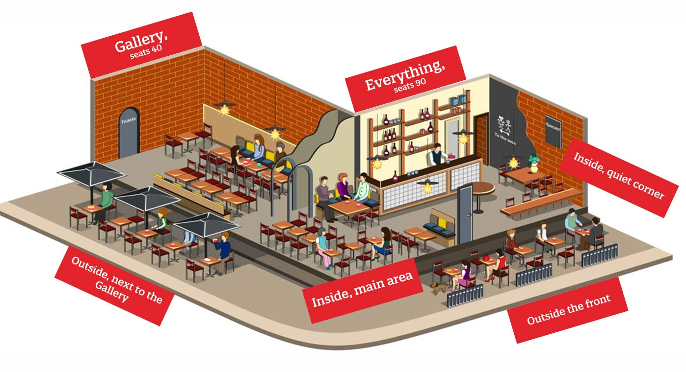<figcaption class="figure-caption text-center">The final inside drawing</figcaption></figure><p>Offsetting the items on the home page wasn't fitting, so I ended up putting the sketches on the homepage. This also filled in the blank squares, which was handy. </p><p>When you look at the <a href="http://redcup.com.au/book" title="Red Cup Cafe - book">final implementation</a>, you'll notice on small screens (which would be 80%+ of the readership) you can zoom into the picture. </p><p>The zoom was a technique I learned from Shopify websites, which customers crave (you can't touch or feel products on a website, so any extra detail is helpful).</p><blockquote class="blockquote"><i class="fas fa-quote-left"></i>Easily ten times less than what I could have done it for.</blockquote><p>Ultimately, this enabled me to give the client fully twice the value than what they paid for, due to this amazing freelancer from South America.</p><h4>Qualitative testing</h4><p>Once I was happy with the basic look and feel of the site, and the content, I wanted some testing. </p><p>I realise you want to test your actual customers, or as close as possible. That was going to be expensive. I used Upwork again, knowing I could get 10-20 minute video responses for about $10-$20 each. </p><p>I opted for some fairly basic parameters, knowing that the cheaper people would probably be overseas. I asked for those with experience of Australian culture. </p><p>In order to cut poor quality responses, I informed applicants they needed to be familiar with the 'UserTesting - Example of a 5 star test' videos (they could search YouTube for those). </p><p>I chose several questions that I took from UserTesting and other sites. If you like, <a href="#testingquestions" data-toggle="collapse" aria-expanded="false" aria-controls="testingquestions">you can view the questions now [open]</a>.</p><div class="collapse" id="testingquestions"><ol> <li>Having spent perhaps 5-10 seconds only on the site, what are your first impressions - would you go there?</li><li>What, if anything, helps this company stand out from its competitors? Explain your answer.</li><li>Go to the menu and choose what you would like to have. Explain your choice. </li><li>Who do you think would be interested in this cafe - the sorts of people (target audience)?</li><li>You want to find some reviews about the place. Look some up and talk about how that influences your decision.</li><li>You've decided you want to go, now see if you can find your way there from your home/business at 2 Selwyn St, Blackburn VIC 3130 (or if you've chosen 'student' -- school: Box Hill High School, 1180 Whitehorse Rd, Box Hill VIC 3128)</li><li>You forgot to check the opening times. It's now 4pm on a Tuesday: do you have time to go there?</li><li>What frustrations did you have about the website?</li><li>If you could add or remove anything, what would you do to improve the site? </li><li>What was nice about the site, did anything put a smile on your face?</li><li>How likely would you go there? <ul start="0"><li>0 Not at all likely</li><li>1 Unlikely</li><li>2 Possibly</li><li>3 Likely</li><li>4 Highly likely</li></ul></li></ol></div><p>I was surprised at the depth and quality of the responses I got. It's amazing how close you get and how easily you can rationalise to yourself 'oh that'll be fine'. </p><p>The changes we made as a result of the testing:</p><ol><li>The booking page was basically 'phone us', which wasn't simple. To encourage more function bookings, we added a form. </li><li>Links to the address/map weren't working for iPhones, so I changed it to <code>http://maps.apple.com/...</code>, which still works on Android (yes, opens in Google Maps).</li><li>The opening hours were listed at an angle, which gave it a unique look, but were too hard to read. In consultation with the client, I changed it to my other idea, of using night and sun icons to add uniqueness. This also conveys the closing times. </li><li>Totally changed the menu system, which on mobiles slid out from the side ('offcanvas') but at a grand total of 4 items, was totally unnecessary. </li><li>A couple of template/CSS-related issues.</li><li>The Facebook feed was simply unnecessary. A link to the page was all that was needed.</li></ol><p>I got positive feedback about a lot of things, of course. For example, the visuals and the submenu on the 'menu' page (which uses Bootstrap's scrollspy for the subsections. </p></div></div><section><div class="row vertcentre"><div class="col-md-6"><h2 class="anchor" id="End">Finalising</h2><p class="text-muted">Optimising, securing, making final changes.</p><p>At this stage I bedded down on details.</p><p>Given this was on a fully-fledged CMS, attention to reducing speed was a huge need.</p><p>Security issues were standard Joomla-specific steps, so I won't detail them here.</p><p>Responsive work was incredibly important given probably 80% of people would be viewing from their mobiles. </p></div><div class="col-md-6"><figure>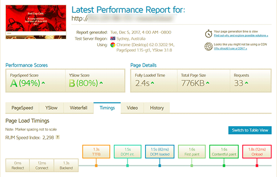<figcaption class="figure-caption text-center">Speed test results by GTmetrix at a point in time.</figcaption></figure></div></div></section><div class="row justify-content-center"><div class="col-md-10 col-xl-8"><h4>Speed Optimising</h4><p>I used Pingdom, GTmetrix, and Chrome's developer tools to work out speed bottlenecks and optimise the site.</p><p>Images were optimised using optimizilla.</p><p>Javascript was inserted only on the relevant pages, and deferred if possible. I learned about what defer and async actually mean:</p><figure>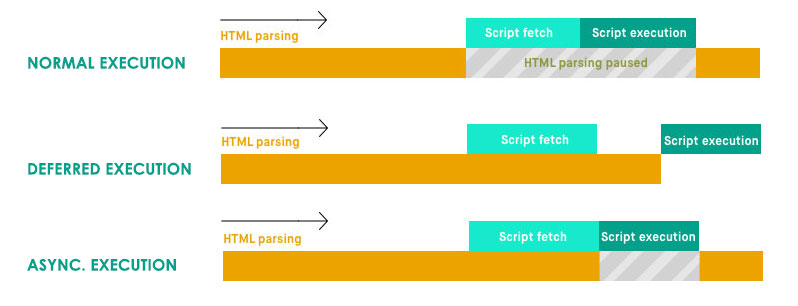<figcaption class="figure-caption text-center">The difference between normal execution of JavaScript, deferred and asynchronous execution</figcaption></figure><p>Other work included ETags, setup of a Content Delivery Network, Caching, GZipping, minifying/uglifying and combining CSS & JavaScript, amongst other things.</p><h4>Responsive Optimising</h4><p>The menus had to be extensively tested and tweaked for different screen sizes. </p><p>Out-of-the-box, the template only provided for an off-canvas menu for mobile. This is misplaced for the hand, which is usually situated at the bottom of the phone. It's also an extra (unnecessary) step to tap on the 'hamburger' lines <i class="fas fa-bars"></i> (is that really a known 'convention' by the audience?) and <em>then</em> one of the 4 options.</p><p>The buttons now bunch up tighter on small screens, and also change position to the left on when the phone is turned sideways. </p><figure>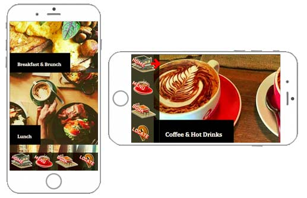<figcaption class="figure-caption text-center">The menu is on the bottom when the mobile is vertical, and on the left when viewed horizontally</figcaption></figure><p>The sub-navigation on the menu page also had to bunch up on smaller screens.</p><p>I brought in an abbreviation, and rotated the text to make it fit nicely on smaller screens. It kept going to 2 lines so I ended up using the abbreviation on all except the largest screens. </p><p>Unfortunately, it seems there is a limit with CSS in that items rotated keep the width of the un-rotated element. I had to change the styling to get rid of the background-color for this reason. </p><h4>Live!</h4><p>We were very pleased with this site, and it was a pleasure working with the client. </p><p>If you haven't already, do view it and go there! <a href="http://www.redcup.com.au">www.redcup.com.au</a>.</p></div></div></div><nav class="navbar navbar-expand navbar-dark fixed-bottom bg-dark" id="navbot"><ul class="navbar-nav"><li class="nav-item"><a class="nav-link" href="#top">Top</a></li><li class="nav-item"><a class="nav-link" href="#Neg">Neg'n</a></li><li class="nav-item"><a class="nav-link" href="#UX">UX</a></li><li class="nav-item"><a class="nav-link" href="#Proto">Proto</a></li><li class="nav-item"><a class="nav-link" href="#End">Final</a></li></ul></nav><nav class="navbar navbar-expand navbar-dark fixed-top bg-dark" id="navtop"><button class="navbar-toggler" type="button" data-toggle="collapse" data-target="#navbarCollapse" aria-controls="navbarCollapse" aria-expanded="false" aria-label="Toggle navigation"><span class="navbar-toggler-icon"></span></button><div class="collapse navbar-collapse" id="navbarCollapse"><ul class="navbar-nav mr-auto"><li class="nav-item"><a class="nav-link" href="/">Home</a></li><li class="nav-item dropdown"><a class="nav-link dropdown-toggle" href="#" id="dropup2" data-toggle="dropdown" aria-haspopup="true" aria-expanded="false">Portfolio</a><div class="dropdown-menu" aria-labelledby="dropup2"><a class="dropdown-item" href="/portfolio-RedCupCafe2017.html">Red Cup Cafe 2017</a><a class="dropdown-item" href="/portfolio-NatWild2017.html">Naturally Wild 2017</a><a class="dropdown-item" href="/portfolio-2018.html">Portfolio 2018</a></div></li></ul><span class="badge badge-warning">Beta</span></div></nav><footer style="background-color:#ccc;"><div class="container"><div class="jumbotron"><div class="row"><div class="col-sm-6"><ul class="nav flex-column"><h4>Websites currently online</h4><li class="nav-item"><a class="nav-link" href="http://redcup.com.au">Red Cup Cafe</a></li><p style="margin:1rem 0 0 0;">~1,000 product websites, on Shopify:</p><li class="nav-item"><a class="nav-link" href="https://natwild.com.au">Naturally Wild</a></li><li class="nav-item"><a class="nav-link" href="https://filipinofoodwholesale.com.au">Philworld Trading Pty Ltd</a></li></ul></div><div class="col-sm-6"><h4>Contact Nathan</h4><p>Phone: <a href="tel:+61405990801">0405 990 801</a></p><p>Email: <a href="javascript:location='mailto:\u006e\u0061\u0074\u0068\u0061\u006e\u002e\u006b\u0031\u0040\u0067\u006d\u0061\u0069\u006c\u002e\u0063\u006f\u006d';void 0"><script type="text/javascript">document.write('\u006e\u0061\u0074\u0068\u0061\u006e\u002e\u006b\u0031\u0040\u0067\u006d\u0061\u0069\u006c\u002e\u0063\u006f\u006d')</script></a></p><p>LinkedIn: <a href="https://www.linkedin.com/in/nathankeenmelbourne/">linkedin.com/in/nathankeenmelbourne/</a></p></div></div></div></div></footer><script src="https://ajax.googleapis.com/ajax/libs/jquery/3.2.1/jquery.min.js"></script><script src="https://cdnjs.cloudflare.com/ajax/libs/popper.js/1.12.9/umd/popper.min.js" integrity="sha384-ApNbgh9B+Y1QKtv3Rn7W3mgPxhU9K/ScQsAP7hUibX39j7fakFPskvXusvfa0b4Q" crossorigin="anonymous"></script><script src="https://maxcdn.bootstrapcdn.com/bootstrap/4.0.0-beta.2/js/bootstrap.min.js" integrity="sha384-alpBpkh1PFOepccYVYDB4do5UnbKysX5WZXm3XxPqe5iKTfUKjNkCk9SaVuEZflJ" crossorigin="anonymous"></script><script src="/js/custom.js"></script></body>